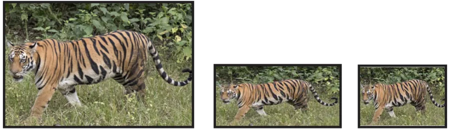
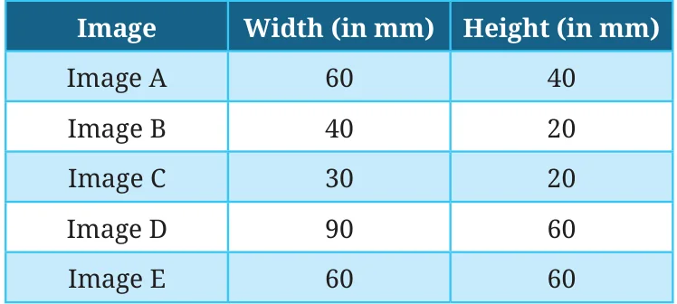

We are all familiar with digital images. We often change the size and orientation of these images to suit our needs. Observe the set of images below -

Image A Image B Image C
Image D Image E
We can see that all the images are of different sizes.
Which images look similar and which ones look different? Images (A, C, and D) look similar, even though they have different sizes.

Do images B and E look like the other three images? No, they are slightly distorted. The tiger appears elongated in B, and compressed and fatter in E! Why? You may notice that images A, C, and D are rectangular, but E is square. Maybe that is why E looks different. But B is also a rectangle! Why does it look different from the other rectangular images? Can we observe any pattern to answer this question? Perhaps by measuring the rectangles?

What makes images A, C, and D appear similar, and B and E different? When we compare image A with C, we notice that the width of C is half that of A. The height is also half of A. Both the width and height have changed by the same factor (through multiplication), \(\frac{1}{2}\) in this case. Since the widths and heights have changed by the same factor, the images look similar. When we compare image A with image B, we notice that the width of B is 20 millimetre (mm) less than that of A. The height too is 20 mm less than the height of A. Even though the difference (through subtraction) is the same, the images look different. Have the width and height changed by the same factor? The height of B is half the height of A. But the width of B is not half the width of A. Since the width and height have not changed by the same factor, the images look different. Can you check by what factors the width and height of image D change as compared to image A? Are the factors the same? Images A, C, and D look similar because their widths and heights have changed by the same factor. We say that the changes to their widths and heights are proportional.